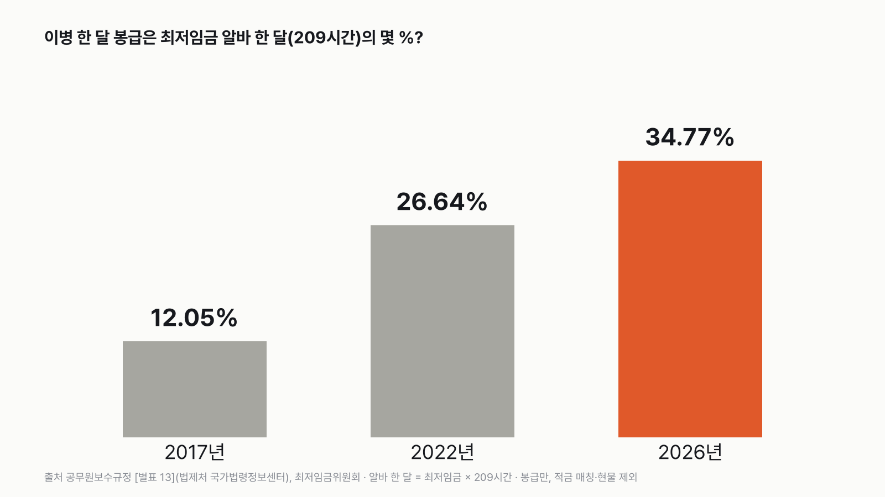
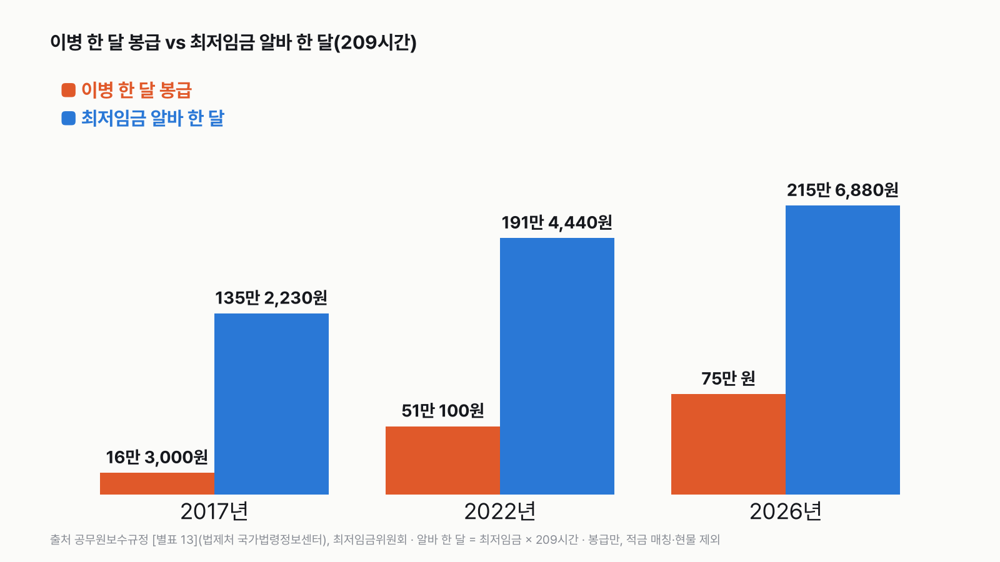
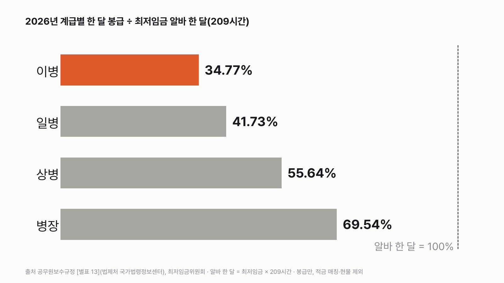

이병 한 달 월급은 최저임금 알바 한 달의 몇 %일까
'군대 월급이 많이 올랐다'는 말은 자주 들어요. 그래도 같은 한 달 알바와 대 보면 어느 정도일지, 먼저 골라 주세요.
독자 투표
이병 월급이 알바 한 달의 몇 %인지, 2017년보다 2026년에 2배 넘게 커졌을까?
이 대결의 규칙 자세히 (자료·판정 기준)
3줄 요약
- 갓 입대한 이병이 한 달에 받는 봉급과, 최저임금으로 한 달 꽉 채워 일한 알바 월급을 나란히 놓아요.
- 공무원보수규정의 군인 봉급표와 최저임금 고시로 2017년, 2022년, 2026년 세 해를 같은 잣대로 견줘요.
- 이병 봉급이 알바 한 달의 몇 %인지가 판이에요. 투표하면 결과가 바로 아래에 열려요.
조건과 규칙
- 이병 봉급: 공무원보수규정 [별표 13] 군인의 봉급표에 적힌 그해 이병 한 달 봉급이에요. 봉급만 셌어요. 적금 매칭 같은 지원금, 밥·옷 같은 현물은 넣지 않았어요.
- 알바 한 달: 그해 최저임금 시급 × 209시간이에요. 주 40시간 일하고 주휴 시간을 더한, 최저임금위원회가 쓰는 한 달 기준이에요.
- 세 판: 2017년, 2022년, 2026년. 판마다 '이병 봉급 ÷ 알바 한 달'을 %로 셌어요.
- 이 계산 방법과 세 해는 값을 보기 전에 정했어요.
결과 요약
12.05% → 34.77%, 9년 사이 2배 넘게 커졌어요
- 2017년: 이병 16만 3,000원, 알바 한 달 135만 2,230원으로 12.05%예요.
- 2022년: 이병 51만 100원, 알바 한 달 191만 4,440원으로 26.64%예요.
- 2026년: 이병 75만 원, 알바 한 달 215만 6,880원으로 34.77%예요.
그래서? 9년 사이 12.05%에서 34.77%로 2배 넘게 커졌어요. 그래도 2026년 알바 한 달은 이병 봉급의 2배가 넘어요. 이 숫자는 봉급만 센 거예요.
독자 예상 vs 데이터 결과
이병 월급이 알바 한 달의 몇 %인지, 2017년보다 2026년에 2배 넘게 커졌을까?
데이터로 보면 2배 넘게 커졌다. 이병 봉급 ÷ 최저임금 한 달(209시간)은 2017년 12.05%, 2022년 26.64%, 2026년 34.77%로 2배 넘게 커졌어요. 2026년은 75만 원 대 215만 6,880원이에요. 봉급만 셌어요.
3줄 요약
- 갓 입대한 이병이 한 달에 받는 봉급과, 최저임금으로 한 달 꽉 채워 일한 알바 월급을 나란히 놓아요.
- 공무원보수규정의 군인 봉급표와 최저임금 고시로 2017년, 2022년, 2026년 세 해를 같은 잣대로 견줘요.
- 이병 봉급이 알바 한 달의 몇 %인지가 판이에요.


| 해 | 이병 봉급 | 알바 한 달(209시간) | 이병 ÷ 알바 | 알바 ÷ 이병 |
|---|---|---|---|---|
| 2017년 | 16만 3,000원 | 135만 2,230원 | 12.05% | 8.30배 |
| 2022년 | 51만 100원 | 191만 4,440원 | 26.64% | 3.75배 |
| 2026년 | 75만 원 | 215만 6,880원 | 34.77% | 2.88배 |
1. 2017년: 12.05%
이병 봉급은 16만 3,000원이었어요. 알바 한 달 135만 2,230원의 12.05%예요. 거꾸로 보면 알바 한 달이 이병 봉급의 8.30배예요.
2. 2022년: 26.64%
이병 봉급이 51만 100원이 됐어요. 알바 한 달은 191만 4,440원이라 26.64%예요. 5년 사이 비율이 두 배 넘게 커졌어요.
3. 2026년: 34.77%
이병 봉급은 75만 원이에요. 알바 한 달 215만 6,880원의 34.77%로, 3분의 1(33.3%)을 조금 넘어요. 알바 한 달은 이병 봉급의 2.88배예요.
봉급은 4.60배, 최저임금은 1.60배
2017년에서 2026년 사이 이병 봉급은 16만 3,000원에서 75만 원으로 4.60배가 됐어요. 같은 9년 동안 알바 한 달은 135만 2,230원에서 215만 6,880원으로 1.60배가 됐어요. 둘 다 올랐지만 이병 봉급이 더 많이 올라서 비율이 커졌어요.


알바 몇 시간치일까
이병 한 달 봉급을 그해 최저시급으로 나누면 알바 몇 시간치인지 나와요. 2017년은 25.2시간, 2022년은 55.7시간, 2026년은 72.7시간이에요. 알바 한 달 209시간과 견주면 2026년도 하루 8시간씩 9일 남짓이에요.
병장이 되면
봉급은 계급마다 달라요. 2026년 봉급은 이병 75만 원, 일병 90만 원, 상병 120만 원, 병장 150만 원이에요. 알바 한 달과 견주면 34.77%, 41.73%, 55.64%, 69.54%예요. 병장도 알바 한 달에는 못 미쳐요. 2017년 병장은 21만 6,000원으로 15.97%였어요.


숫자를 다시 보며
'병사가 한 달에 받는 돈이 75만 원뿐'이라는 뜻은 아니에요. 이 글은 봉급표에 적힌 봉급만 셌어요. 나라가 적금에 얹어 주는 돈 같은 지원금, 밥·옷·잠자리 같은 현물은 넣지 않았어요. 또 알바 한 달은 주 40시간을 빠짐없이 일했을 때의 금액이에요. 여러분은 몇 %일 거라 생각했나요?
이 숫자는 어디서 왔나요
출처
기준일 2026년 1월 1일부터 주는 봉급과 2026년 최저임금이에요. 봉급표는 2026년 11월 14일에 확인했어요.
공무원보수규정(법제처 국가법령정보센터), 2017·2022·2026년 판
- 군인의 봉급표 [별표 13]
이병~병장 봉급
최저임금위원회
- 연도별 최저임금 결정 현황
시급, 한 달 환산
어떻게 셌나요
- 이병 봉급: 공무원보수규정 [별표 13] 군인의 봉급표 비고 6 '병'. 해마다 그해 판(대통령령 제27769호 2017-01-06, 제32319호 2022-01-04, 제36013호 2026-01-02)을 법제처 국가법령정보센터에서 읽었어요. 2026년 값은 현행 판(제36728호, 2026-10-02 시행)도 같아요.
- 알바 한 달: 최저임금위원회 연도별 최저임금 결정 현황의 시급 × 209시간(2017년 6,470원, 2022년 9,160원, 2026년 10,320원).
- 비율: 이병 봉급 ÷ 알바 한 달 × 100. 소수 둘째 자리에서 반올림했어요.
- 알바 몇 시간치: 이병 봉급 ÷ 그해 최저시급.
- 계산 방법과 세 해는 값을 보기 전에 정했어요(docs/odd/pool_2611_dilemma.md '다음 묶음').
- 투표 질문: 따로 기준선을 두지 않고, 첫 해(2017)와 마지막 해(2026)의 비율을 견줘 흔히 쓰는 배수인 '2배'를 넘었는지 물었어요. 34.77% ÷ 12.05% = 2.88배라 '2배 넘게 커졌다'가 답이에요. 알바 한 달 ÷ 이병 봉급(2026년 2.88배)과 우연히 같은 숫자예요.
| 항목 | 2017 | 2022 | 2026 | 잰 것 / 계산 |
|---|---|---|---|---|
| 이병 봉급(원) | 163,000 | 510,100 | 750,000 | 공식 봉급표 |
| 최저시급(원) | 6,470 | 9,160 | 10,320 | 공식 고시 |
| 알바 한 달(원, 209시간) | 1,352,230 | 1,914,440 | 2,156,880 | 계산 |
| 이병 ÷ 알바 한 달 | 12.05% | 26.64% | 34.77% | 계산 |
한계 4가지
이 데이터로 말할 수 없는 것
- 봉급만 셌어요. 적금 매칭 같은 지원금과 밥·옷·잠자리 같은 현물은 들어 있지 않아요.
- 알바 한 달은 주 40시간 + 주휴로 꽉 채운 209시간 기준이에요. 실제 알바는 이보다 짧게 일하는 경우가 많아요.
- 세금이나 보험료를 빼기 전 금액끼리 견줬어요.
- 2027년 최저임금(시급 10,700원)은 나왔지만 2027년 봉급표는 아직 이 글에 넣지 않았어요.
다음 대결
대결 다 보기걷기 vs 운동
걷기·산책 vs 개인 운동, 하루에 한 사람이 더 많은 쪽은?
A걷기·산책vsB개인 운동
투표하러 가기
대결하루 시간투표했어요TV 승TV vs 영상
TV vs 영상, 하루에 본 사람이 더 많은 쪽은?
ATV(실시간 방송)vsB영상(다시보기·동영상)
투표하러 가기
대결설문투표했어요믿을 수 있다 승우리 사회, 믿을 수 있다 vs 없다
우리 사회, '믿을 수 있다' vs '믿을 수 없다' 더 많은 쪽은?
A믿을 수 있다vsB믿을 수 없다
투표하러 가기
대결하루 시간투표했어요반려동물 승반려동물 vs 식물
반려동물 돌보기 vs 식물 돌보기, 하루에 한 사람이 더 많은 쪽은?
A반려동물 돌보기vsB식물 돌보기
투표하러 가기
대결하루 시간투표했어요책 승책 vs 모바일 게임
책 읽기 vs 모바일 게임, 하루에 한 사람이 더 많은 쪽은?
A책 읽기vsB모바일 게임
투표하러 가기
대결하루 시간투표했어요신문 승신문 vs SNS
신문 보기 vs SNS 교제, 하루에 한 사람이 더 많은 쪽은?
A신문 보기vsBSNS 교제
투표하러 가기
대결설문투표했어요없다 승기부할 생각, 있다 vs 없다
앞으로 기부할 생각, '있다' vs '없다' 더 많은 쪽은?
A있다vsB없다
투표하러 가기
대결설문투표했어요근로시간 승월급 vs 근로시간
직장에서 임금 만족 vs 근로시간 만족, 만족한다는 사람이 더 많은 쪽은?
A임금vsB근로시간
투표하러 가기
새 글 나오면 받아 보기
피드 리더 앱에 이 사이트 주소를 한 번 넣어 두면, 새 글이 올라올 때 앱에 떠요. 가입이나 메일 주소는 필요 없어요.
받는 법 보기
- 피드 리더 앱을 하나 골라요. 새 글을 모아 보여 주는 앱이에요. 예를 들면 Feedly나 Inoreader가 있어요. 둘 다 무료고 웹·휴대폰에서 써요.
- 앱에서 '구독 추가'(+)를 누르고 아래 주소를 붙여 넣어요.
- 끝이에요. 새 글이 올라오면 앱 목록에 떠요.
https://protofu.github.io/opendata-insight/feed.xmlFeedly를 쓴다면 여기를 눌러 바로 추가할 수도 있어요.